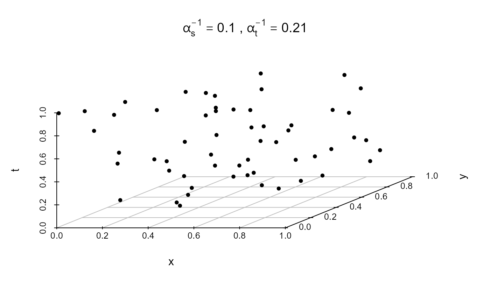

R/plot_stDPP.R
plot_stDPP.RdProduces diagnostic plots for spatio-temporal determinantal point process (DPP) simulations or fitted models. The function formats the plot title based on the spatial and temporal interaction parameters \(\alpha_s\) and \(\alpha_t\), automatically displaying either the parameters themselves or their reciprocals when greater than 1.
plot_stDPP(data, type = c("3D", "space", "time"), alpha_s, alpha_t)A spatio-temporal point pattern object suitable for
plot_stpp(), typically from the stpp or related packages.
Character string specifying the type of plot to produce.
This is passed directly to plot_stpp(). Typical values are "3D", "space", and "time".
Numeric scalar (> 0). Spatial interaction parameter of the DPP model.
Numeric scalar (> 0). Temporal interaction parameter of the DPP model.
No return value. The function is called for its side effect of producing a diagnostic plot.
If \(\alpha_s > 1\) and \(\alpha_t > 1\), the title displays \(\alpha_s^{-1}\) and \(\alpha_t^{-1}\), which correspond to interaction ranges. Otherwise, the parameters are shown directly.
The function then calls plot.ST.pp() to produce the actual plot.
# \donttest{
# Simulate a stationary separable Matérn ST-DPP
sim <- rstDPP(
mode = "stationary",
model = "S",
spectral = "matern",
alpha_s = 10,
alpha_t = 4.7,
nu = 2,
eps = 1,
lambda_max = 70,
grid_size = 1.5
)
plot_stDPP(sim, type = "3D", alpha_s = 10, alpha_t = 4.7)

# }